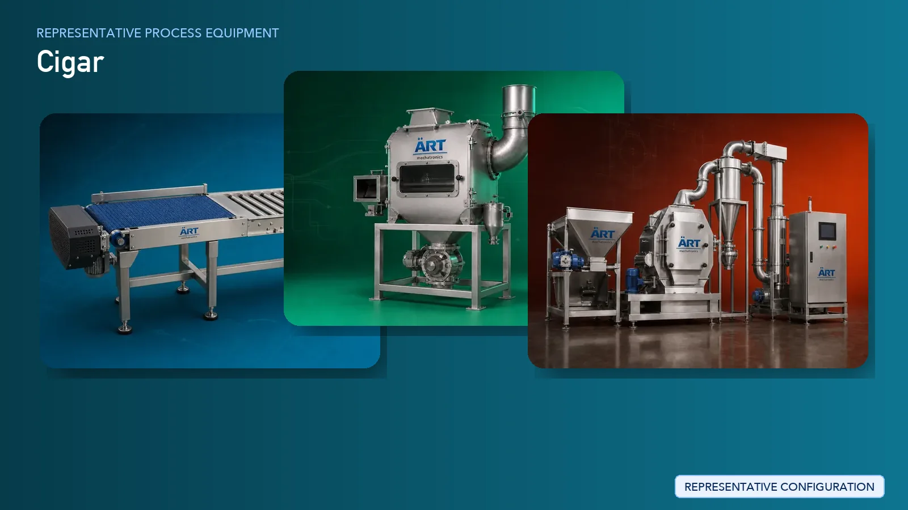

Cigar Manufacturing Plant & Machinery Solutions
Cigar manufacturing is a specialized process that combines precise tobacco preparation with controlled rolling, shaping, and curing techniques to produce premium-quality cigars.

About Cigar Manufacturing Plant & Machinery Solutions processing
ART Mechatronics provides advanced machinery and turnkey solutions for cigar manufacturing units, supporting tobacco preparation, conditioning, cutting, and process optimization. Our systems are designed to ensure uniform quality, controlled processing, and efficient plant operations for both semi-automatic and automated production setups.
Complete Cigar Manufacturing Process Flow
Tobacco leaves are received from farms or suppliers and transferred to the processing line.
Ensures safe and efficient handling of delicate leaves.
Leaves are cleaned to remove dust, sand, and unwanted impurities.
Maintains product quality and hygiene.
Leaves are sorted based on size, texture, and quality.
Critical for maintaining consistency in final product.
Leaves are conditioned to achieve optimal moisture levels required for rolling and shaping.
Ensures flexibility and prevents leaf breakage.
Tobacco is cut or prepared depending on cigar type and structure (filler, binder, wrapper).
Enables controlled and consistent processing.
Different tobacco types may be blended to achieve desired characteristics.
Prepared tobacco is rolled into cigars either manually or using semi-automatic/automatic machines.
Ensures:
- Uniform shape
- Consistent density
- Controlled production
Rolled cigars are dried or cured to stabilize structure and enhance product quality.
Final inspection ensures uniformity, appearance, and product consistency.
Finished cigars are packed into boxes, tubes, or premium packaging formats.
Suitable for premium retail and export markets.
Processing stages generate dust which must be controlled. Systems Used:
Ensures clean and safe working environment.
Machinery Required for Cigar Manufacturing Plant
- Material Handling Systems
- Pre Cleaner
- Air Classifier
- Cyclone Separator
- Grading & Sorting Systems
- Conditioning / Humidification System
- Tobacco Cutting Machine
- Blending Equipment
- Cigar Rolling Machine
- Cigar Forming Machine
- Drying / Curing Systems
- Inspection Systems
- Packaging Machines
- Dust Collection System
Turnkey Cigar Plant Solutions
ART Mechatronics provides complete turnkey solutions for cigar manufacturing units, including:
- Process design & plant layout
- Tobacco preparation systems
- Integration of rolling and forming machines
- Dust control & air handling systems
- Automation & control panels
- Installation & commissioning
- After-sales support
We customize solutions based on:
- Production capacity
- Level of automation (manual / semi-auto / auto)
- Product type and size
- Facility layout
Why Choose Art Mechatronics
- Expertise in tobacco processing systems
- Capability to support both artisanal and automated production
- Advanced moisture control and conditioning systems
- Reliable dust control solutions
- Heavy-duty industrial design
- Global export capability
Machinery in a Cigar Manufacturing Plant & Machinery Solutions plant
Where it's used
Get pricing & specs for the Cigar Manufacturing Plant & Machinery Solutions plant
Share the product, target capacity, current process and plant location. These details help our engineers discuss the right machine or line configuration.
One partner, from design to start-up
ART Mechatronics designs, manufactures, installs and commissions your Cigar Manufacturing Plant & Machinery Solutions solution with regional presence in India, UAE and Thailand.